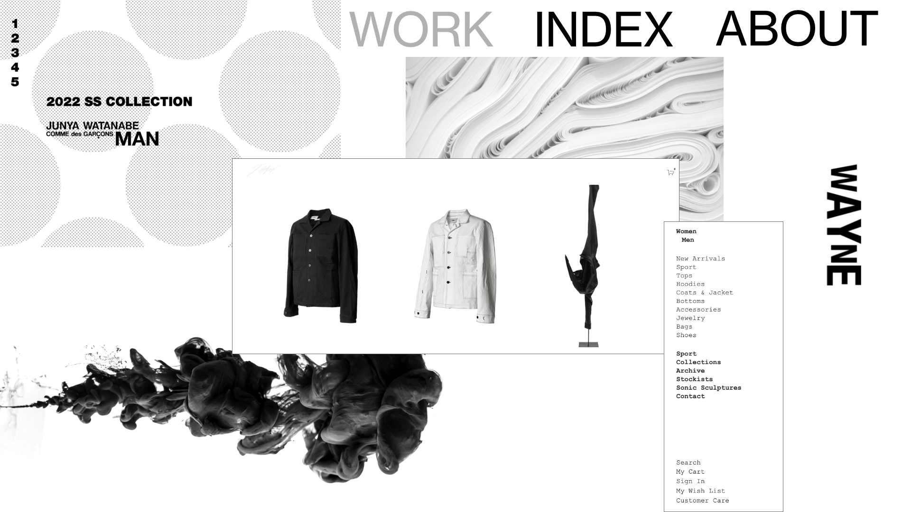
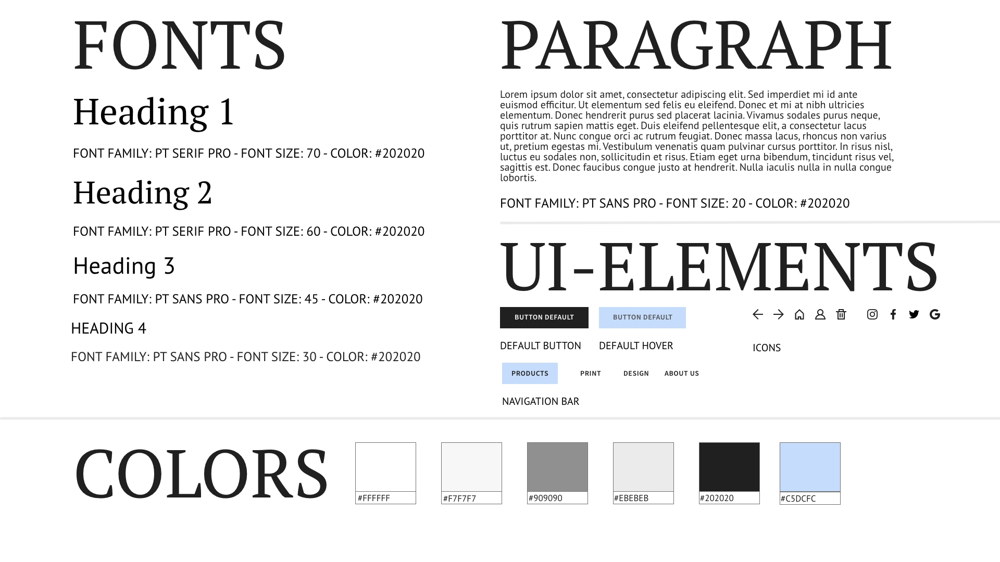

03_UX
PROTOTYPE 2
UX
I tema “03 Grundlæggende UX” fik vi til opgave, at designe en webshop, der sælger t-shirts. Hovedfokus på dette tema er brugergrænseflade og hvilken påvirkning denne har på brugeroplevelsen. Da vi fik opgaven vidste jeg allerede, at jeg ville lave en webshop, der solgte basics med dertilhørende printløsninger. Dette skyldes at jeg selv har stor interesse for design af tøj og altid har ønsket mig en platform, der passede til mine behov. Det var derfor nødvendigt for mig, at undersøge markedet.
I min desk research fandt jeg ud af, at miljøbevidstheden er stigende, samt at tøjmarkedet forventes at stige med 5.69% årligt fra 2021-2026. Mine største konkurrenter var det hollandske foretagende Vistaprint og det tyske Spreadshirt. Da jeg selv har benyttet begge disse sider til design af tøj, så vidste jeg hvordan jeg skulle differentiere mig. Med afsæt i ovenstående indsigter påbegyndte jeg min survey research, for at få yderligere viden om købsvaner i t-shirt branchen. Dette kombineret med et interview med en modeinteresseret skabte rammerne, for min endelige løsning og design.
DESIGN SPRINT
I sketch fasen af casen startede vi ud med, at lave en lightning demo i grupper. Formålet med dette var, at inspirere de deltagende inden vi skulle starte med, at skitsere vores egen løsning. Min primære inspiration kom fra hjemmesider til mærkerne AderError, 032c, Acne Studios og Mihara Yasuhiro. Især AderError havde nogle fede features, som bryder de generelle UI-konventioner.
Herfra begyndte vi på vores solution sketch ved brug af The Four-Step Sketch. Som vist til højre, så lavede vi “Crazy 8s” på baggrund af vores idé fra tidligere step. Jeg ønskede at finde en måde, at opstille produktsiden på, som ville skabe ekstra blikfang. På kort tid skulle skitsere 8 forskellige måder, som denne funktion kunne visualiseres på. Dette er en god måde, at få idéer frem, hvis man sidder fast i den kreative process. På baggrund af denne lavede vi en solution sketch i Excalidraw, som ses til højre for. Her konkretiseres idéen yderligere og den skitseres færdigt.
MOODBOARD
STYLETILE
PALETTE.PRINT
Målgruppen for sitet er små- til mellemstore virksomheder og privatpersoner, som er kvalitetsbevidste og ikke ønsker en masseproduceret løsning. Med afsæt i dette fokuserede jeg på, at skabe en visuelt dragende platform, som udstrålede kreativitet og kvalitet. Vigtigheden i at følge UI-konventioner var også et stort fokus, dog valgte jeg at udfordre disse en smule på produktsiden, for at lade den kreative tilgang skinne igennem. Ved brug af copy og microcopy sørgede jeg for, at skabe en guidet brugerrejse.
Da min første prototype var færdig lavede jeg en testgruppe, for at få indsigter i mulige forbedringer, samt undersøge om konceptet var forståeligt. Min feedback var generelt positiv og jeg fik indblik i nogle udfordringer i brugerrejsen, som jeg tidligere ikke var klar over. Disse blev rettet til den endelige prototype.
PITCH
Heavy garments, quality prints, precise embroidery, what else? Disse er grundstenene, der danner fundamentet for PALETTE.PRINT. For hvad har man ellers brug for når man skal lave merchandise til sit band, starte sit eget tøjfirma eller sørge for ens medarbejdere har ordentlige uniformer? PALETTE.PRINT er en kvalitetsfokuseret produktionsvirksomhed, der skaber blanks med en høj holdbarhed, dertilhørende print- og broderingsløsninger.
I min interview research fandt jeg ud af, at den interviewede hellere ville købe få hoodies af god kvalitet end mange hoodies af en middelmådig kvalitet. I min survey research fandt jeg ud af, at 200,00 kr. er det beløb som folk vil betale for en kvalitets t-shirt uden print. Dette brugte til at prisfastsætte mine produkter.
Under min test af prototypen fandt jeg ud af, at det var nødvendigt at skabe en lettere brugerrejse mellem mit produkt sortiment. Dette gav mig indblik i vigtigheden i at teste sitet løbende, hvilket jeg vil fortsætte med i fremtiden. Endvidere vil jeg have fokus på, at følge trends, samt at skabe samarbejde med andre virksomheder, der kan bruges til markedsføring på de sociale medier.